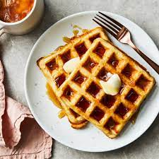

Waffles

Description
This waffle recipe is the only one you'll need to make homemade waffles with your waffle iron.
Simple pantry ingredients mix up quickly in this easy batter that can be
used right away or stored in the refrigerator for up to a week.
Ingredients
- Eggs
- Flour
- Milk
- Oil
- Sugar
- Salt
Steps
- Whisk Eggs.
- Add flour, milk and oil.
- Stir in the sugar.
- Add remaining ingredients.
- Pour batter onto a hot waffle iron.
- Cook until golden brown.
- Repeat with the remaining batter.